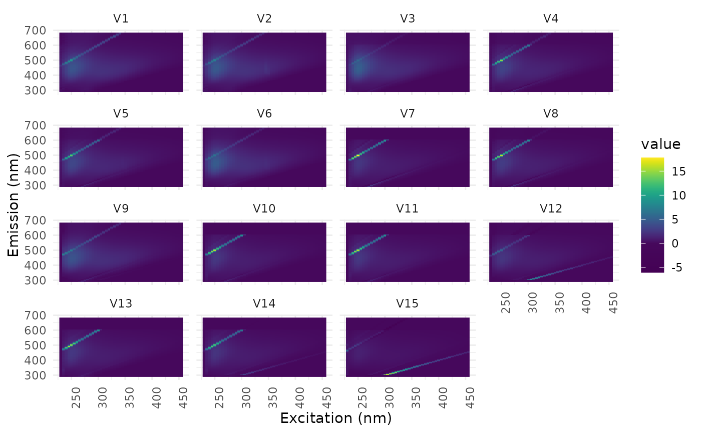

The codebook vectors of the units are converted to EEMs.
Arguments
- som
object of class eemsom, see
eemsom- denormalise
logical, if TRUE, each prototype is multiplied by the mean normalisation factor of the samples mapped to the unit (the mean of all samples for empty units). The result has the scale of the original data.
Value
object of class eemlist, samples are named by the unit (e.g. "V1"), see mat2eem
Details
For maps of PARAFAC loadings (eempf_som), the prototype EEM of a unit is the sum of the PARAFAC components weighted by the prototype loadings.
See also
Other map results:
eemsom_predict(),
eemsom_quality(),
eemsom_samples(),
eemsom_split()
Examples
data(eem_list)
som <- eemsom(eem_list, rlen = 100, seed = 42)
codes <- eemsom_codes(som)
codes
#> sample ex_min ex_max em_min em_max is_blank_corrected is_scatter_corrected
#> 1 V1 230 455 290 682 NA NA
#> 2 V2 230 455 290 682 NA NA
#> 3 V3 230 455 290 682 NA NA
#> 4 V4 230 455 290 682 NA NA
#> 5 V5 230 455 290 682 NA NA
#> 6 V6 230 455 290 682 NA NA
#> 7 V7 230 455 290 682 NA NA
#> 8 V8 230 455 290 682 NA NA
#> 9 V9 230 455 290 682 NA NA
#> 10 V10 230 455 290 682 NA NA
#> 11 V11 230 455 290 682 NA NA
#> 12 V12 230 455 290 682 NA NA
#> 13 V13 230 455 290 682 NA NA
#> 14 V14 230 455 290 682 NA NA
#> 15 V15 230 455 290 682 NA NA
#> is_ife_corrected is_raman_normalized
#> 1 NA NA
#> 2 NA NA
#> 3 NA NA
#> 4 NA NA
#> 5 NA NA
#> 6 NA NA
#> 7 NA NA
#> 8 NA NA
#> 9 NA NA
#> 10 NA NA
#> 11 NA NA
#> 12 NA NA
#> 13 NA NA
#> 14 NA NA
#> 15 NA NA
ggeem(codes)
